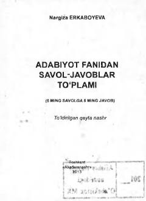

AFAdabiyot fanidan savol-javoblar va testlarga boy o'quv qo'llanma.
Mazkur qo'llanma maktab va litsey o'quvchilari, abituriyentlar hamda keng kitobxonlar ommasiga mo'ljallangan bo'lib, adabiyot fanidan savol-javoblarni o'z ichiga oladi. Kitobda o'zbek mumtoz adabiyoti, xalq dostonlari va boshqa adabiy mavzular yuzasidan batafsil savol va javoblar berilgan.